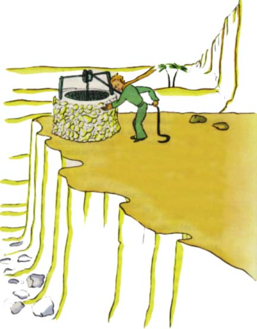

A dodal:
"Nestojí to za to..."
Studna, ke které jsme pøi¹li, se nepodobala saharským studnám. Studny na Sahaøe jsou pouhé jámy vyhloubené v písku. Tahle se podobala studni na vesnici. Ale nebyla tam ¾ádná vesnice a myslil jsem, ¾e se mi to jen zdá.
"To je zvlá¹tní," øekl jsem malému princi, "v¹echno je pøipraveno: rumpál, vìdro i provaz..."
Zasmál se, dotkl se provazu a uvedl rumpál do pohybu. A rumpál skøípal, jako skøípe stará korouhvièka, kdy¾ vítr dlouho spal.
Sly¹í¹," øekl malý princ, "probouzíme tuto studnu a ona zpívá..."

Nechtìl jsem, aby se namáhal.
"Poèkej," øekl jsem mu, "pro tebe je to pøíli¹ tì¾ké."
Pomalu jsem vytahoval vìdro a¾ k okraji. Postavil jsem je na roubení pìknì do rovnováhy. V u¹ích mi stále znìl zpìv rumpálu a ve vodì, která se dosud chvìla, jsem vidìl chvìjící se slunce.
"Tou¾ím po té vodì," øekl malý princ, "dej mi, prosím, napít..."
A tu jsem pochopil, co hledal.
Zvedl jsem vìdro a¾ k jeho rtùm. Pil se zavøenýma oèima. Bylo to líbezné jako sváteèní den. Ale tato voda byla docela nìco jiného ne¾ obyèejný pokrm. Zrodila se z pochodu pod hvìzdnou oblohou, ze zpìvu rumpálu a z úsilí mých pa¾í. Byla srdci tak milá jako nìjaký dárek. Kdy¾ jsem byl malý chlapec, svìtlo vánoèního stromku a nìha úsmìvù, to v¹e dodávalo v¾dycky zvlá¹tní záøi vánoènímu dárku, který jsem dostal.
"U vás lidé pìstují pìt tisíc rù¾í v jedné zahradì," øekl malý princ, "a pøece tam nenalézají to, co hledají..."
"Nenalézají...," odpovìdìl jsem.
"A pøesto by mohli najít, co hledají, v jediné rù¾i nebo v tro¹ce vody..."
"Jistì," odpovìdìl jsem.
A malý princ dodal:
"Ale oèi jsou slepé. Musíme hledat srdcem."
Napil jsem se. Dobøe se mi dýchalo. Písek má za úsvitu barvu medu. Radoval jsem se i z té medové barvy. Proè jen jsem pocítil tíseò...
"Musí¹ dodr¾et slib," øekl tichounce malý princ a zase si sedl ke mnì.
"Jaký slib?"
"Ví¹, náhubek pro beránka... jsem zodpovìdný za tu kvìtinu!"
Vytáhl jsem z kapsy své náèrty. Malý princ je uvidìl a zasmál se:
"Ty tvé baobaby se trochu podobají hlávkám zelí..."
"Ó!"
A já na nì byl tak hrdý!
"Ta tvá li¹ka... její u¹i... ty se trochu podobají rù¾kùm... a jsou hroznì dlouhé!"
A znovu se zasmál.
"Jsi nespravedlivý, èlovíèku, neumìl jsem kreslit nic jiného ne¾ zavøené a otevøené hrozný¹e.
"Ale to bude dobré," øekl, "dìti jsou chápavé."
Nakreslil jsem mu tedy náhubek. Kdy¾ jsem mu ho podával, mìl jsem srdce sevøené:
"Ty má¹ nìjaké plány, které neznám..."
Ale neodpovìdìl mi na to. ØEKL:
"Ví¹, mùj pøíchod na Zemi... zítra bude jeho výroèí..."
Chvilku mlèel a potom je¹tì dodal:
"Spadl jsem nedaleko odtud..."
A zaèervenal se.
Znovu jsem pocítil, ani¾ jsem vìdìl proè, zvlá¹tní bolest. Pøesto mi napadla otázka:
"Tak to není náhodou, ¾e ses procházel tenkrát ráno, kdy¾ jsem tì pøed týdnem poznal, jen tak sám, na tisíce mil ode v¹ech obydlených krajù! Vracel ses k místu, kam jsi spadl?"
Malý princ se opìt zaèervenal.
A váhavì jsem dodal:
"Snad kvùli tomu výroèí?..."
Malý princ se znovu zaèervenal. Nikdy neodpovídal na otázky, ale kdy¾ se nìkdo èervená, znamená to "ano", viïte?
"Ach!" øekl jsem. "Mám strach..."
Ale on odpovìdìl:
"Musí¹ teï pracovat. Musí¹ se vrátit ke svému stroji. Budu tady na tebe èekat. Vra» se zítra veèer..."
Nebyl jsem v¹ak uklidnìn. Vzpomnìl jsem si na li¹ku. Èlovìk se vydává v nebezpeèí, ¾e bude trochu plakat, kdy¾ se nechal ochoèit...